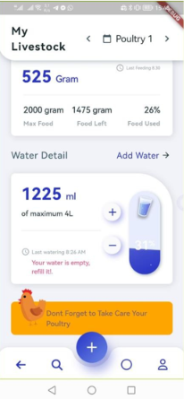
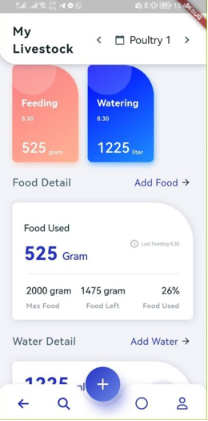
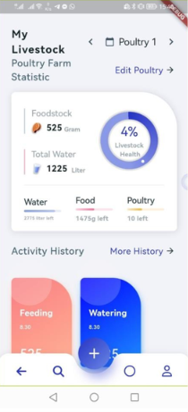

Mobile Application
Aplikasi IoT inovatif yang dibuat untuk hackathon, dirancang khusus untuk manajemen peternakan ayam. Mampu mengecek ketersediaan air minum dan pakan, serta menyediakan fitur scheduling otomatis untuk peternakan.


